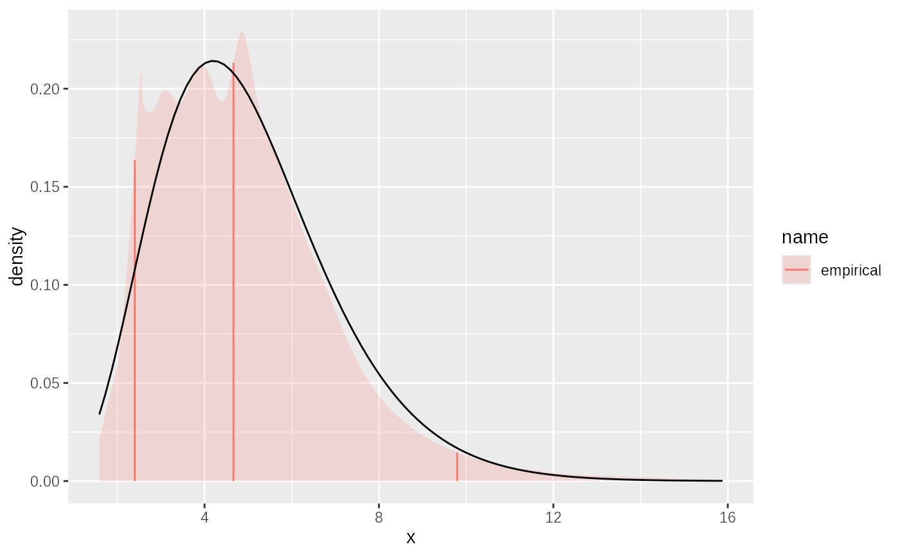

This fits a CDF and quantile function to cumulative probabilities in a transformed space. X value
transformation is specified in the link parameter and is either something
like "log", "logit", etc or can also be specified as the logit transformed cdf and quantile function from a statistical distribution.
Arguments
- x
either a vector of samples from a distribution
Xor cut-offs for cumulative probabilities when combined withp- p
for CDF fits, a vector the same length as
xgivingP(X <= x).- link
a link function. Either as name, or a
link_fnsS3 object. In the latter case this could be derived from a statistical distribution byas.link_fns(<dist_fns>). This supports the use of a prior to define the support of the empirical function, and is designed to prevent tail truncation. Support for the updated quantile function will be the same as the provided prior.- smooth
fits the empirical distribution with a pair of splines for CDF and quantile function, creating a mostly smooth density. This smoothness comes at the price of potential over-fitting and will produce small differences between
pandqfunctions such thatx=p(q(x))is no longer exactly true. Setting this to false will replace this with a piecewise linear fit that is not smooth in the density, but is exact in forward and reverse transformation.- name
a label for this distribution. If not given one will be generated from the distribution and parameters. This can be used as part of plotting.
- ...
not used
Value
a dist_fns S3 object containing functions p() for CDF, q()
for quantile, and r() for a RNG, and d() for density. The density
function may be discontinuous.
Details
The empirical distribution fitted is a piecewise linear or monotonically
increasing spline fit to CDF in transformed X and logit Y space. The end
points are linearly interpolated in this space to the tail_pth quantile.
The function can fit data provided as x, P(X<=x) pairs.
Constructs an empirical distribution from CDF points \((x_i, p_i)\) by fitting monotonic splines in a transformed quantile–quantile (Q–Q) space. The input \(x\) is first mapped to a standardized probability scale via a link-dependent transformation \(q_x = T(x)\). The resulting pairs \((q_x, p)\) are then used to build two monotonic interpolation functions: $$ p = F_{\text{cdf}}(q_x), \quad q_x = F_{\text{qf}}(p) $$ where \(F_{\text{cdf}}\) and \(F_{\text{qf}}\) are constructed as follows:
If
smooth = FALSE, both are piecewise linear interpolants (viastats::approx).If
smooth = TRUE, both are strictly monotonic cubic splines fitted using the"monoH.FC"method fromstats::splinefun, converted to polynomial spline form (polySpline). Monotonicity is enforced by requiring \(q_x\) and \(p\) to be strictly increasing after tie-breaking perturbations.
Tail extrapolation is applied by linearly extending the first and last
segments in Q–Q space to the points \((0,0)\) and \((1,1)\) if not already
included. The final distribution functions are:
$$
P(X \leq x) = F_{\text{cdf}}(T(x)), \quad
Q(p) = T^{-1}(F_{\text{qf}}(p))
$$
where \(T\) and \(T^{-1}\) are derived from the link argument.
This function imputes tails of distributions. Given perfect data as samples or as quantiles it should recover the tail
Unit tests
#from cdf:
xs = c(2,3,6,9)
ps = c(0.1,0.4,0.6,0.95)
e = empirical_cdf(xs, ps, link="log")
testthat::expect_equal(e$p(xs), ps)
testthat::expect_equal(e$q(ps), xs)
# quantiles:
p = c(0.025,0.05,0.10,0.25,0.5,0.75,0.9,0.95,0.975)
q = stats::qgamma(p, shape=2)
shape2_gamma = as.dist_fns(pgamma, shape=2)
gemp = empirical_cdf(q,p,link = shape2_gamma)
withr::with_seed(123, {
testthat::expect_equal(mean(gemp$r(100000)),2, tolerance=0.01)
testthat::expect_equal(sd(gemp$r(100000)), sqrt(2), tolerance=0.01)
})
# With perfect input can recover the underlying distribution including tails:
tmp = empirical_cdf(x=seq(0.01,0.99,0.01),p=seq(0.01,0.99,0.01),link = as.dist_fns(punif,0, 1), knots = 100)
testthat::expect_equal(
tmp$q(c(0.01, 0.1, 0.25, 0.75, 0.9, 0.99)),
c(0.01, 0.1, 0.25, 0.75, 0.9, 0.99),
tolerance = 0.002
)
# bimodal with log link and end defined
tmp3 = empirical_cdf(x = 1:7, c(0.1,0.3,0.4,0.4,0.5,0.9,1),link="log")
testthat::expect_equal(
tmp3$p(-1:8),
c(0, 0, 0.1, 0.3, 0.4, 0.4, 0.5, 0.9, 1, 1),
tolerance = 0.01
)
testthat::expect_equal(
tmp3$q(seq(0, 1, 0.2)),
c(0, 1.63476839034733, 3, 5.05332769159444, 5.51891960240613, 7)
)
Examples
# A random sample from a distribution:
sample = rgamma2(1000, mean=5, sd=2)
# suppose we only have quantiles
p = seq(0.1,0.9, 0.1)
quantiles = quantile(sample, p)
# fit from quantiles:
fit2 = empirical(x=quantiles,p=p, link="log")
plot(fit2)+ggplot2::geom_function(fun= ~ dgamma2(.x, mean=5, sd=2))
